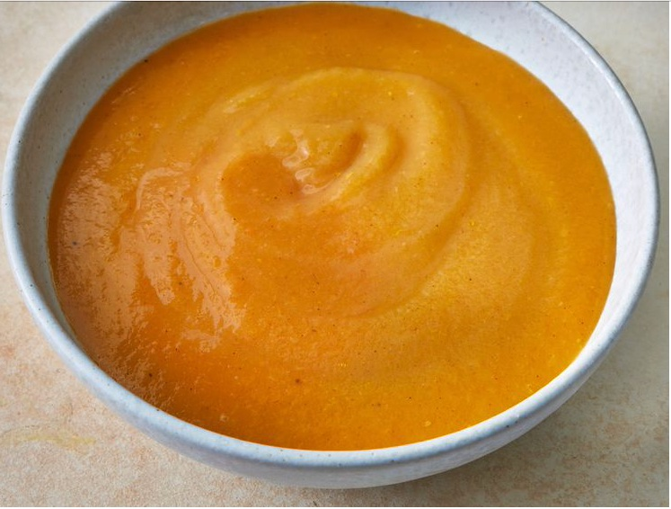

Butter Nut Squash

Butter Nut Squash for killing those hunger pangs
Want a quick soup for the cold winter?
You will whip this one in minutes
Here's the list of ingredients
- Butter
- Onion, celery, carrots and potatoes
- Butter nut squash
- Chicken stock
- Salt and pepper
Here are the steps to create the perfect Butternut Squash
- Gather all the ingredients
- Melt the butter in a large pot in medium heat, and cook onion, celery,carrots and squash until lightly browned
- Bring to boil, over medium to high heat, reduce heat to low, cover pot and simmer till all the vegetables are tender, for about 40 minutes
- Transfer the soup to a blender and process until smooth
- Return to pot and mix in any remaining stock to reach desired consistency